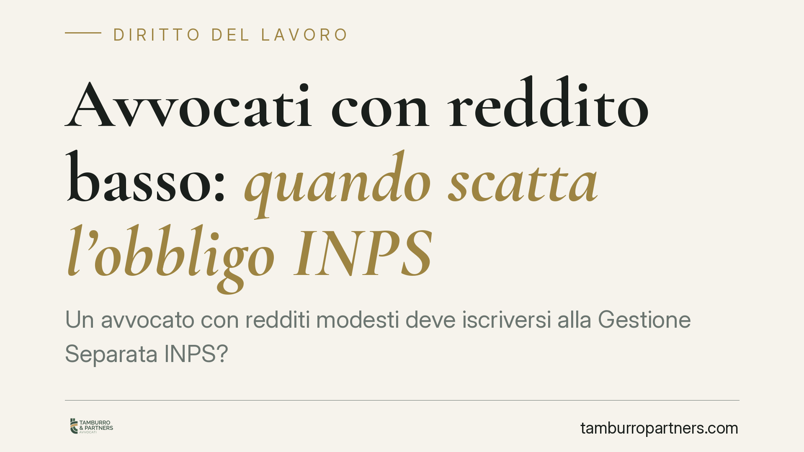

Avvocati con reddito basso: quando scatta l'obbligo INPS
Un avvocato con redditi modesti deve iscriversi alla Gestione Separata INPS? La giurisprudenza di legittimità chiarisce che l'obbligo non si lega alla soglia dei 5.000 euro, ma all'abitualità della prestazione professionale. Un passaggio rilevante per chi riceve avvisi di addebito dall'INPS a fronte di un'attività saltuaria o appena avviata.

Il caso e la questione
Molti professionisti con redditi contenuti ricevono avvisi di addebito con cui l'INPS pretende l'iscrizione alla Gestione Separata e il pagamento dei relativi contributi. La domanda ricorrente è semplice: sotto una certa soglia, l'obbligo scatta davvero?
La risposta della giurisprudenza di legittimità è netta: non conta l'importo in sé, ma la natura dell'attività. Se la prestazione è abituale, l'obbligo sorge a prescindere dal reddito prodotto. Se è occasionale, interviene invece la soglia dei 5.000 euro prevista dalla normativa.
Inquadramento normativo
L'obbligo di iscrizione alla Gestione Separata è previsto dall'art. 2, comma 26, della legge n. 335/1995, che riguarda i soggetti che svolgono attività di lavoro autonomo senza una cassa previdenziale propria che copra quel reddito.
Il riferimento alla soglia nasce dall'art. 44, comma 2, del d.l. n. 269/2003: per il lavoro autonomo occasionale l'obbligo contributivo scatta solo quando il reddito annuo supera i 5.000 euro. È un dato che va letto con attenzione: la soglia vale per l'attività occasionale, non è una franchigia generale.
Qui sta l'equivoco più diffuso. Chi esercita in modo abituale la professione non può invocare i 5.000 euro come esenzione: per lui l'obbligo di iscrizione esiste anche con redditi inferiori, perché la soglia non lo riguarda. Viceversa, chi svolge prestazioni sporadiche e non organizzate resta sotto quella soglia finché non la supera.
Per l'avvocato la questione si intreccia con la Cassa Forense: l'iscrizione alla Gestione Separata entra in gioco nelle fasi in cui l'attività non è coperta dalla previdenza di categoria, tipicamente nei periodi iniziali o in situazioni di esercizio marginale.
Chi deve provare l'abitualità
Il punto decisivo è l'onere della prova. Secondo i principi generali in materia (art. 2697 c.c.), chi fa valere un diritto deve dimostrarne i fatti costitutivi. Quando l'INPS pretende i contributi sostenendo che l'attività è abituale, è l'Istituto a dover provare quel carattere di abitualità: continuità delle prestazioni, organizzazione, ripetitività degli incarichi.
Non basta quindi un reddito dichiarato o una partita IVA aperta per presumere l'obbligo. L'abitualità è una condizione sostanziale, che va dimostrata con elementi concreti e non desunta automaticamente.
Implicazioni pratiche
Per l'avvocato con redditi bassi, o all'inizio della professione, questo significa che un avviso di addebito non è di per sé incontestabile. Occorre verificare se l'INPS abbia effettivamente ricostruito l'abitualità dell'attività o se si sia limitato a leggere il dato reddituale.
L'avviso di addebito, inoltre, ha efficacia di titolo esecutivo. Chi intende contestarlo deve muoversi entro termini precisi: l'opposizione all'avviso di addebito si propone, ai sensi dell'art. 24 del d.lgs. n. 46/1999, entro 40 giorni dalla notifica. Superato il termine, il recupero prosegue in via esecutiva e lo spazio difensivo si riduce drasticamente.
Cosa fare in concreto
- Verifica la data di notifica dell'avviso di addebito e calcola subito il termine di 40 giorni per l'opposizione ex art. 24 d.lgs. n. 46/1999: è il vincolo temporale più rigido.
- Ricostruisci la natura della tua attività nel periodo contestato, raccogliendo documentazione su numero, continuità e tipologia degli incarichi: serve a distinguere l'esercizio abituale da quello occasionale.
- Controlla la posizione presso la Cassa Forense e i periodi di eventuale sovrapposizione o scopertura, per capire quale ente copriva effettivamente quei redditi.
- Non pagare né aderire d'impulso: una contestazione tempestiva può incidere sul merito della pretesa, soprattutto se l'INPS non ha dimostrato l'abitualità.
- Consigliamo di far valutare l'avviso prima della scadenza, perché i margini di difesa dipendono dal rispetto dei termini e dalla ricostruzione dei fatti.
La distinzione tra abitualità e soglia reddituale non è un tecnicismo: decide se un contributo è dovuto o meno. Per questo merita un esame caso per caso, fondato sui fatti concreti e non su automatismi.
---
Contributo informativo a cura di Tamburro & Partners Avvocati - Avv. Giuseppe Tamburro. Non costituisce parere legale.
Ogni storia di lavoro ha i suoi tempi.
Se gestisci HR e vuoi un confronto su contenzioso, ispezioni o licenziamenti, scrivi allo studio. Ti rispondiamo entro un giorno lavorativo.